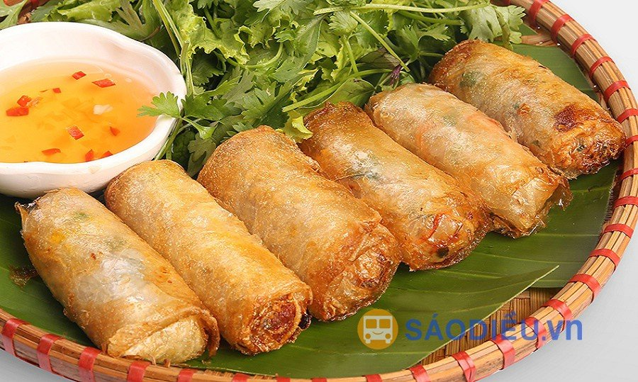
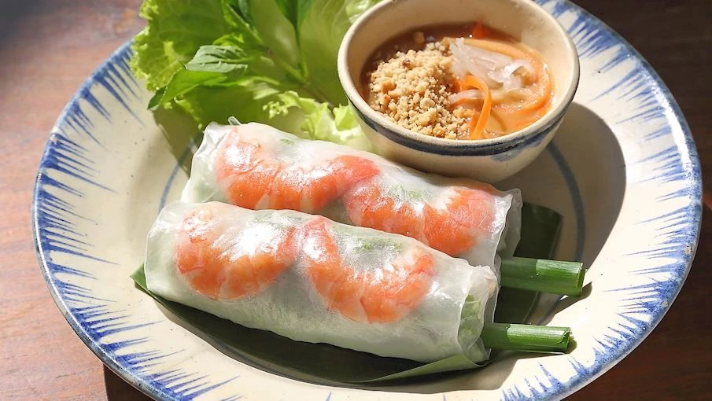
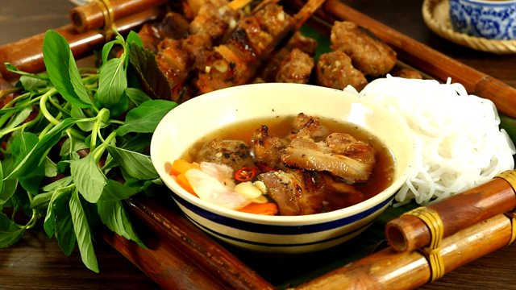

Bánh bột lọc
Bánh bột lọc Huế không chỉ được coi là món ăn vặt, bạn hoàn toàn có thể thưởng thức thay cơm hay bữa chính trong ngày. Loại bánh này phổ biến ở nhiều địa phương, tuy nhiên, chỉ khi ăn tại Huế, bạn mới cảm nhận được vị ngon đặc trưng, đúng điệu của miền Trung
Nem rán
Trong mâm cỗ truyền thống của người Hà Nội từ lâu đã không thể thiếu được món nem rán nhân tôm thịt. Cùng là món nem rán, có công thức chế biến tương tự nhau giữa các vùng miền thế nhưng nem rán Hà Nội vẫn là món phổ biến nhất và được yêu thích nhất. Lớp vỏ nem được dùng là bánh tráng (bánh đa nem) làm từ gạo, tráng mỏng, khi ăn chỉ cần cắn nhẹ là chạm tới nhân nem nóng hổi thơm ngon bên trong, cực kỳ hấp dẫn. Bởi lớp vỏ cuốn nem mỏng như vậy nên quá trình trộn và cuốn nhân nem đòi hỏi người đầu bếp cần có sự khéo léo, tính toán chỉn chu để sao cho nhân vừa ngon đậm đà mà lại không quá ướt làm hỏng bánh tráng. Nhân nem thường có tôm tươi nõn bóc vỏ và thịt băm nhỏ, mộc nhĩ, nấm hương, miến, củ đậu, cà rốt…và gia vị nêm nếm vừa miệng.
Gỏi cuốn
Gỏi cuốn hay còn được gọi là nem cuốn (phương ngữ Bắc bộ), là một món ăn khá phổ biến ở Việt Nam.Gỏi cuốn có xuất xứ từ Miền nam Việt Nam với tên gọi là gỏi cuốn - bằng các nguyên liệu gồm rau xà lách, húng quế, tía tô, tôm khô, rau thơm, thịt luộc, tôm tươi.. tất cả được cuộn trong vỏ bánh tráng. Gia vị dùng kèm là tương hột trộn với lạc rang giã nhỏ phi bằng dầu ăn với hành khô.... tất cả thái nhỏ và cuộn trong vỏ làm từ bột mì. Gia vị dùng kèm là tương ớt trộn với lạc rang giã nhỏ phi bằng dầu ăn với hành khô. Món ăn này phổ biển ở Việt Nam chủ yếu dùng bánh tráng được cuốn với nhiều thành phần khác nhau tùy từng vùng miền, thường dùng để khai vị hay ăn kèm cùng đồ uống như một món nhậu, được làm từ bánh tráng cuộn với các loại rau thơm, bún, và một số loại thịt như thịt bò, heo, vịt, tôm, cá, cua v.v. Các món ăn lấy bánh tráng để cuốn nhìn chung là một dạng chế biến món ăn thịnh hành khắp ba miền Bắc, Trung, Nam Việt Nam. Hầu như không có một công thức cố định cho các món dùng bánh tráng cuốn, bởi tùy địa phương, vùng miền, nguyên liệu dùng để cuốn có nhiều khác biệt.
Bún chả
Bún chả là một món ăn của Việt Nam, bao gồm bún, chả thịt lợn nướng trên than hoa và bát nước mắm chua cay mặn ngọt. Món ăn xuất xứ từ miền Bắc Việt Nam, là thứ quà có sức sống lâu bền nhất của Hà Nội,nên có thể coi đây là một trong những đặc sản đặc trưng của ẩm thực Hà thành. Bún chả có nét tương tự món bún thịt nướng ở miền Trung và miền Nam, nhưng nước mắm pha có vị thanh nhẹ hơn.